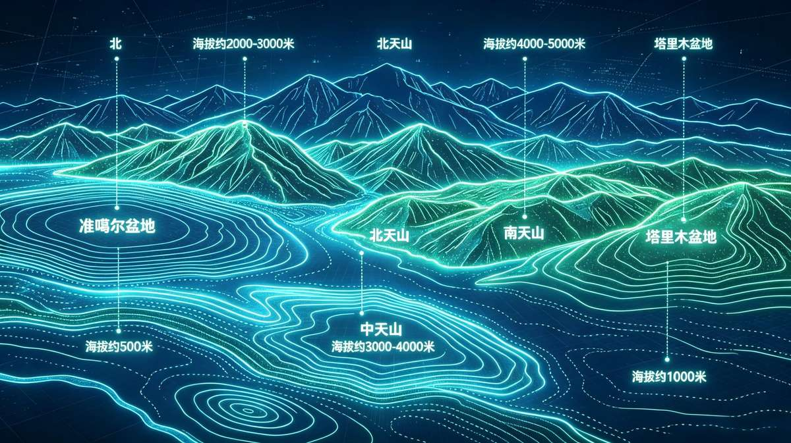
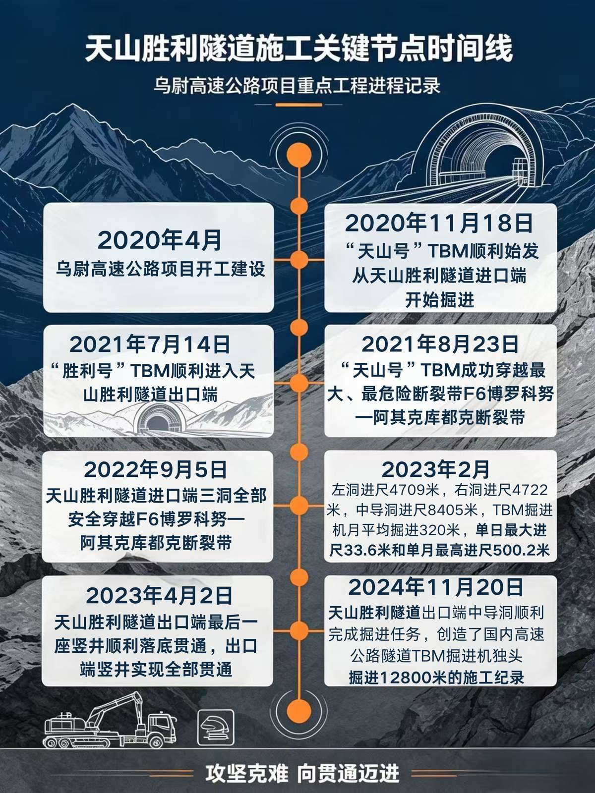
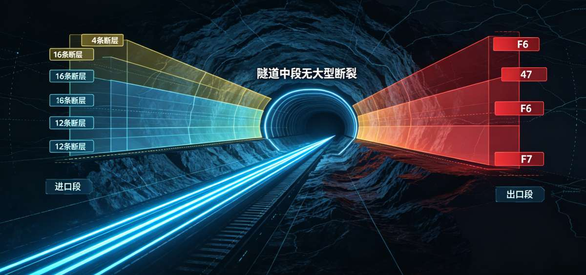
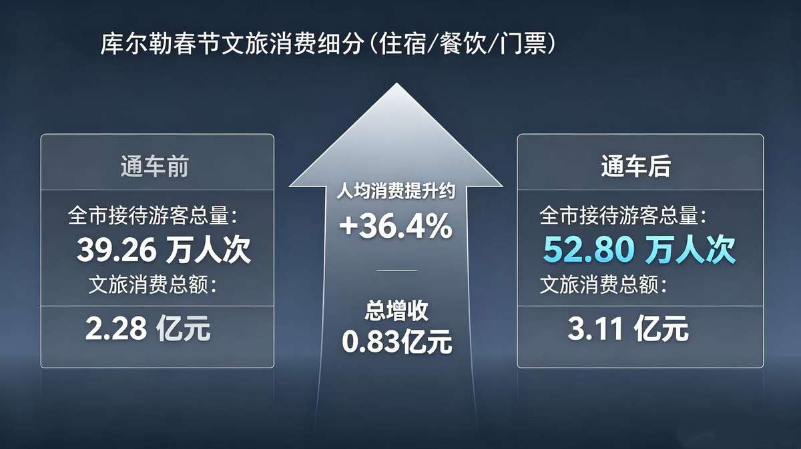

一条 22.13 公里的隧道，如何重新连接新疆？
166 万平方公里的土地，被一道天然屏障劈成两半。
天山横亘新疆中部，平均宽度 300 公里，最高海拔超过 7000 米。它不是地图上的一条等高线，而是南疆与北疆之间，一道用脚步、驼铃和整整一部公路史都没能彻底跨过去的坎。
2025 年 12 月 26 日，这道坎被凿穿了。世界最长高速公路隧道——天山胜利隧道通车，乌鲁木齐到库尔勒的车程从 7 小时压缩到 3.5 小时，翻越天山从近 3 小时的盘山险路，变成约 20 分钟的地下坦途。
这不是一条路的故事，是 2500 万新疆人重新丈量生活半径的故事。
建议佩戴耳机，以获得完整的沉浸式声音体验。
4280 米，一道翻越了千年的坎

天山山脉海拔地形示意图
从北到南，地势依次抬升再骤降：准噶尔盆地（约 500 米）、北天山（2000-3000 米）、中天山（3000-4000 米）、南天山（4000-5000 米）、塔里木盆地（约 1000 米）。
看这张地形图，答案已经写在等高线里。从北到南，地势像一道倒 V 形的山峰骤然抬升又骤然跌落。
乌鲁木齐海拔约 800 米，翻过 4280 米的胜利达坂，库尔勒降到 930 米。地图上两点之间的直线距离只有约 250 公里，相当于北京到石家庄，但因为这道屏障，实际公路里程要拉长到近 470 公里。
天山让「近在咫尺」变成了「远在天边」，而这正是这个故事要解决的第一个问题。
「常年行走在乌鲁木齐与库尔勒之间的货运司机眼中，这意味着清晨出发、傍晚抵达的漫长奔波，若遇大雪封山，一等就是好多天。」 —— 中交新疆交通投资发展有限公司总工程师 苗宝栋
「以后去库尔勒就不用翻越危险的老虎口或者绕行 500 公里了。」 —— 216国道养护工 坎阶别克·哈吾斯力力
对于世代生活在天山两侧的人们来说，这条路不是选项，是刚需。南疆的羊要进北疆的市场，北疆的货要下南疆的县城，病人要转院，学生要回家——天山阻隔的，从来不只是风景。
数据来源：新疆交通运输厅公路里程统计（1949-2025）· 点击柱状查看详情
这是一部用脚步丈量荒漠的拓荒史，也是一道天山始终没被填平的空白。1949 年，新疆全区公路通车里程仅 3361 公里，还不及今天北京一座城市的地铁运营里程。
到 1978 年改革开放前夕，这个数字涨到 2.38 万公里。
2024 年底，新疆公路总里程突破 23 万公里；2025 年底，达到 24.6 万公里。
76 年间，新疆公路里程增长了 72 倍——但请注意柱状图背后没有画出来的那条线：截至 2020 年乌尉高速开工前，跨越天山的高等级公路数量为零。
新疆早已把「疆内环起来」的骨架修好了，天山，是这幅拼图里唯一空缺的那一块。
接下来，深入天山腹地
22.13 公里的地下征途即将开始
22.13 公里，在豆腐脑里做工程
世界高速公路隧道单洞全长排名
但「最长」只是它最不重要的标签。真正的难题，藏在排名看不到的地方。
最大埋深 1112.6 米——相当于把 3 座广州塔「小蛮腰」叠起来，整个埋进山体里。隧道要穿越 16 条地质断裂带，同时面对高寒、高海拔、高地应力、高地震烈度、高环保要求——工程界称之为「五高」禁区。高地应力最高达到 22 兆帕，相当于每平方米要承受 2200 吨的挤压力，足以让坚硬的岩石像揉面一样发生塑性变形。
乌尉高速全长 319.7 公里，双向四车道，设计时速 100–120 公里，天山胜利隧道是这条大动脉里最难啃的一段骨头。
如果沿用传统的「打眼放炮」钻爆法，凿穿需要整整 6 年。「老乡们等不起」，苗宝栋说，「创新是唯一选择。」
中交集团为这条隧道量身定制了两台硬岩掘进机——「天山号」和「胜利号」，配合全球首创的「三洞 + 四竖井」方案：传统左右双主洞之间增设中导洞，硬岩掘进机先行打通，再向两侧开辟 14 个作业面同时施工。
这就是「长隧短打」——最终将工期压缩至 52 个月，节约近 28%。

在地质图上，天山胜利隧道穿越的地层从炭质板岩到花岗闪长岩，从石英片岩到断层破碎带——硬度、稳定性、含水率天差地别，像一块布满暗礁的海床。
天山胜利隧道穿越的地质条件极为复杂。北段进口群集中了 12 条断裂带，南段出口群 4 条。其中 F6 和 F7 是两条宽度超过 350 米的超大型破碎带，相当于一整个足球场的纵深都是松软破碎的岩体。其余 14 条为中小型次生派生断裂。

天山胜利隧道地质纵断面示意图：展示炭质板岩、花岗闪长岩、石英片岩等岩层分布及断层产状，全线共穿越16条断层破碎带
「这是我工作近30年遇到的最复杂的工程。」 —— 乌尉项目总经理部总经理 周政
如果采用传统的「打眼放炮」钻爆法，打通天山胜利隧道需要 72 个月——整整 6 年。但「老乡们等不起」，苗宝栋说，「创新是唯一选择。」
中交集团为天山胜利隧道量身定制了两台硬岩掘进机——「天山号」和「胜利号」。它们像两条钢铁巨龙，在多种世界级复杂地层中安全、高效地掘进。配合「主洞+中导洞」的创新工法，14 个作业面同时推进，最终将工期从 72 个月压缩至 52 个月。
天山胜利隧道施工关键节点时间线
「这是技术突破的胜利，是生态保护的胜利，更是为新疆人民开辟幸福之路的胜利。」 —— 中交新疆交通投资发展有限公司总工程师 苗宝栋，2024年12月30日天山胜利隧道贯通时
隧道通了，天山那头不再远了
从 7 小时到 3.5 小时，距离正在被重新定义
7 小时 → 3.5 小时，距离被重新定义
| 通车前 | 通车后 | 变化幅度 | |
|---|---|---|---|
| 路线长度 | 470km | 319.7km | -150.3km |
| 全程耗时 | 7 小时 | 3.5 小时 | -50% |
| 翻越天山 | 3 小时 | 20 分钟 | -89% |
| 通行条件 | 冬季封山 | 全年 365 天 | 质变 |
| 设计时速 | 30-60km/h | 100-120km/h | +100% |
点击表格行查看变化详情
一张表，五个维度，讲清楚「路通了」到底意味着什么。
路线长度从 470 公里缩短到 319.7 公里，少了 150.3 公里；全程耗时从 7 小时压缩到 3.5 小时，砍掉一半；翻越天山本身，从 3 小时的盘山险路变成 20 分钟的隧道穿行，降幅接近 89%；通行条件从「冬季封山」变成「全年 365 天」，这是一次从量变到质变的跨越；设计时速也从 30–60 公里/小时提升到 100–120 公里/小时，翻了一倍。
过去，翻越天山的 3 小时是盘山路上的心惊胆战；现在，穿越天山的 20 分钟是隧道里的光影画廊——隧道内壁复刻了新疆的蓝天、白云、星空和沙漠胡杨，让这段地下旅程有了风景。
拖动滑块，看看天山胜利隧道同等效率能为你省下多少时间
数据依据：乌鲁木齐-库尔勒 全程7h→3.5h（-50%），翻越天山 3h→20min（-89%）
「中午到库尔勒吃个饭再回来！」 —— 乌鲁木齐市民 李春成，退休后常去南疆旅游的他，通车当天排在永丰收费站的第一位。（据人民日报报道）
从乌鲁木齐市永丰乡出发，经后峡、胜利达坂（天山胜利隧道核心段）、乌拉斯台、巴伦台、和静县、塔什店，抵达库尔勒市，再延伸至尉犁县——这不是一串地名，而是一条正在生长的经济走廊。
乌鲁木齐的消费市场、和静的农牧产品、库尔勒的物流枢纽、尉犁的旅游资源，被一条路重新串联。它串起 3 个地州市，辐射人口超过 500 万，沿线景区超过 10 个。
「'疆内环起来、进出疆快起来'的目标初步实现。」 —— 新疆维吾尔自治区交通运输厅一级巡视员 王永轩
「通车不是终点，而是新的起点。隧道通车后，乌鲁木齐到库尔勒的车程将从原来的7小时缩短至3.5小时。这意味着，南北疆的人员往来、物资流通、经济联系将发生革命性变化，新疆的时空格局将被重塑。」 —— 中交新疆交通投资发展有限公司总工程师 苗宝栋
路通了，机会来了
当距离缩短，繁荣开始生长
0.83 亿，一个春节的增量

通车前后春节文旅消费对比
通车后的第一个春节，库尔勒交出了一份令人意外的答卷。
全市接待游客总量从 39.26 万人次跃升至 52.80 万人次，增长 34.5%；文旅消费总额从 2.28 亿元增至 3.11 亿元，增长 36.4%。换算下来，仅一个春节，库尔勒就多增收 8300 万元。
这笔账不是抽象的统计数字。巴州昆仑四运旅游服务有限公司副总经理李震说，乌尉高速通车「让一日内往返体验南北疆不同风情的愿望得以实现」。巴音郭楞州博湖县文旅局局长袁阳则已经开始为博斯腾湖冬捕活动备战——「通车会带来更多游客，我们已经做好了充足的准备」。（据人民日报报道）
南北疆的经济差距，是新疆发展最核心的结构性问题，而这道题第一次出现了松动的迹象。
2023 年，南疆五地州 GDP 合计 5744 亿元，北疆 11811 亿元，差距比值 2.06。2024 年，比值微升至 2.07——差距还在扩大。2025 年，乌尉高速通车元年，差距比值回落至 2.05——这是近三年来的首次回落。
0.02 的微小变化背后，是南疆经济增速的悄然加快。需要说明的是，2025 年乌尉高速通车不足一个月，这一比值的回落更多是趋势信号，其真实的经济拉动效应，仍需要更长周期的数据来验证。
"乌尉高速全线通车后，有效贯通南北疆经济脉络，让区域资源流动更通畅、产业联动更紧密，构建起区域协同发展新格局。" —— 自治区交通运输厅运输管理处干部 王瑞
「一直都盼着。乌尉高速通车了，我们的『致富快车』也可以出发了。」 —— 乌鲁木齐市乌鲁木齐县萨尔达坂乡萨尔乔克村党支部书记 哈力夏·夏依木尔旦
巴音布鲁克振鑫牧业的孟克巴图，算的是一笔最朴素的成本账：通车前一趟货车从和静运到乌鲁木齐要 2050 元，2 天才能跑一个往返；通车后降到 1900 元，1 天就能跑完。
「以前天山阻隔，我们南疆的羊很难进入乌鲁木齐市场。」孟克巴图说。通车后客户主动找上门，公司成立以来第一次接到这么多订单——天山那头的市场，第一次真正向南疆牧民敞开了大门。
巴州冷水鱼运输
巴州万锦水产的许纪伟，用一条鱼的存活率讲清楚了「时间就是效益」。
和静到乌鲁木齐的冷水鱼运输时间从 10 小时压缩到 3.5 小时，死亡率从 15% 降至 3%；博斯腾湖到乌鲁木齐，运输时间从 48 小时压缩到 24 小时，死亡率从 4% 降到 2%；巴州到内地，运输时间从 60 小时压缩到 40 小时，死亡率从 5% 降到 3%。
「目前公司年产商品鱼 50 余吨，年产值大概 300 万，通车后运输效率提升会极大带动销售增长，预计年产值能达到 450 万左右。」许纪伟说。
从 3.23 亿到 5 亿
交通正在改变旅游版图，路还在延伸
从 3.23 亿到 5 亿，路还在延伸
新疆旅游业的增长曲线，是一条被公路不断托举起来的陡峭上升线。
2015 年，全年接待游客 0.61 亿人次；2019 年突破 2 亿大关，达到 2.13 亿人次；经历了 2020 年的短暂回落后，2023 年反弹至 2.65 亿人次；2025 年，全年接待游客 3.23 亿人次，游客花费 3700 亿元，同比分别增长 8% 和 8.4%，双双创下历史新高。
十年间，游客量增长了 5.3 倍。这条曲线背后，是独库公路、阿禾公路、乌尉高速一条条「最美公路」相继通车。「新疆是个好地方」，从一句宣传口号，变成了 3.23 亿人次用脚投票的选择。
乌尉高速通车，不是终点，只是新疆交通网络里的一段序曲。
2026 年自治区政府工作报告提出，「十五五」期间力争年接待游客突破 5 亿人次。截至 2026 年 6 月上旬，全疆已累计接待游客 1120 万人次，同比增长 7.55%；独库公路沿线、赛里木湖景区日均接待量分别同比增长 35% 和 41%；自驾游占总出行比例达到 87.32%，深度体验式旅游正在取代打卡式观光。
自治区交通运输厅党委书记郭胜说，「『十五五』启程，我们将锚定加快建设交通强国目标任务。」
从天山胜利隧道望出去，这条路的意义远不止乌鲁木齐到库尔勒。往东，乌尉高速可通过京新高速衔接京津冀，通过连霍高速衔接长三角；往南，通过西和高速衔接西部陆海新通道，通达粤港澳大湾区和成渝地区。
这不再只是一条连接两座城市的公路，而是中国东部经济圈与亚欧国家之间，一处新的交通枢纽。
穿越天山，从来不只是一道工程问题。它是关于时间的问题——7 小时变成 3.5 小时；是关于距离的问题——470 公里变成 319.7 公里；更是关于人的问题——2500 万新疆人，重新丈量了自己生活的半径。
路，还在继续延伸。
不是打穿天山容易，
而是天山那头有人民。
本作品数据来源于以下公开渠道，所有数据均保留原始口径，未经加工篡改：
所有表格数据直接引用原始出处；历史趋势数据经 Excel 整理核对；工程参数来自交通运输部及中交集团公开资料。受访人物引文已标注具体出处来源。
部分精确降幅（如牧业运费"约腰斩"）因官方详细口径尚未完全公开；部分预测性数据（如 2030 年游客量目标）引自政府规划文件。南北疆 GDP 差距比值基于 2023-2025 年官方统计公报计算，2025 年乌尉高速通车仅不足 1 个月，其经济影响尚需更长周期观察。